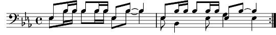

[B1B2] Boum bidiboum bidiboum fla...
1. [T1T2] Herr Kolonel Brünisauer
Herr Brigadier Von dem Weter
Herr Schtrumpfenbach l'commandant d'corps,
Et tout l'gratin d'l'Etat-major
Sont réunis en réunion
Pour décider des décisions,
[Tous] Car l'heure est grave,
La guerre approche:
Faut-il ach'ter des lampes de poches
Pour le moral de nos soldats
Doubler la ration d'cervelas?
Et pour protéger la nation
Des barbelés de G'nèv' à Sion?
[Répons] Et l'avion?
T'as dit quoi?
Et l'avion?
Pour l'armée?
T'es cinglé!
Pas d'avenir fédéral
Tu délires, caporal
Messieurs, du calme s'il vous plaît.
2. [T1T2] Le Colonel Pidoux-Jaquet
Le Brigadier Durand-Bovet
Rossier-Ducrot, le commandant,
Et tout's les nouilles du régiment
Sont réunis pour boire un verre
A la santé d'l'armée de terr'.
[Répons] Et l'avion?
Ridicule!
Le colonel va parler
Pour le pays (6x)
[Tous] Le vin d'ici, foutra la frousse
A l'ennemi, à l'ennemi...
Et si jamais, il a l'bouchon,
On rentrera à la maison.